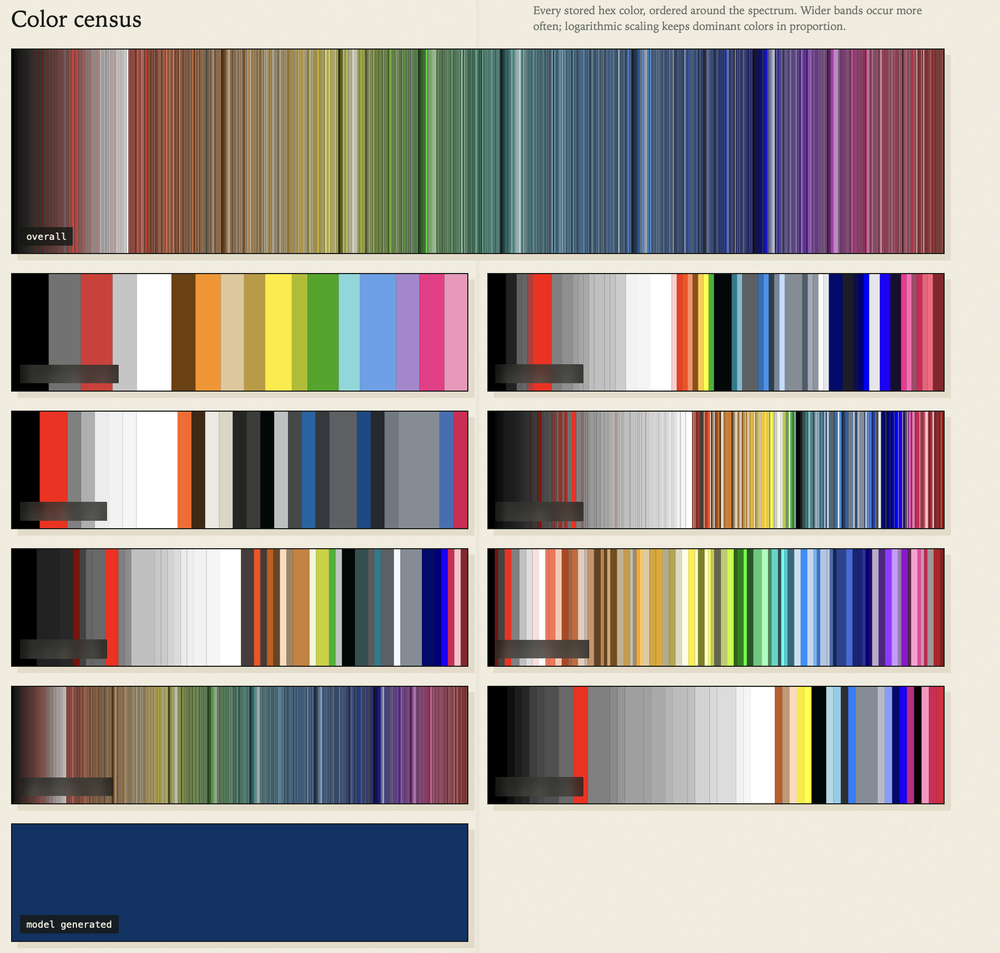

A Color Speaks More Than a Thousand Words
Three years ago, I demoed a new customer's product catalog in our app. My scripts had pulled the category tree, the products, the prices. Only the colors couldn't be scripted: the data held just names.
"Hellblau." "Anthracite." A name is not a swatch. "Hellblau" means light blue, but which light blue? No file anywhere held the answer, because the answer isn't data. It's something a human just knows by looking.
I was the color mapper
So for the demo, the script was me. This was April 2023, and I did what everyone was doing that spring: I opened the website ChatGPT and pasted the color names in by hand. It gave me hex codes back, the six characters like #bdd9ef that tell a screen exactly which color to glow. It could even do twenty at a time. I copied them into a mapping file, and built myself an HTML table so I could see every swatch next to its name and judge whether the model's light blue was my light blue.
It worked. The demo had colors, and they were good. But everything else in that demo was a script, and the colors were an evening of me playing copy-paste pipeline between two programs.
This is the story of how I automated everything.
Baby steps, official endpoint
ChatGPT had answered my question; I wanted the same answer without relaying it by hand. And OpenAI offered exactly that: the same models, reachable as an API — a doorway my script could knock on, no chat window involved. So I opened Postman, a tool for composing web requests by hand, and rebuilt my question as something a script could ask: here is a list of color names, give me a hex code for each.
It knew.
Of course it knew — I wasn't asking it to be creative. I was asking it to remember.
That Postman collection became my lab notebook, and its changelog is now a fossil record. The first entries, April 25, 2023, use Davinci — a model most people have never heard of, the workhorse before ChatGPT's fame. Then came gpt-3.5-turbo, its instruction-following variant, gpt-4-turbo, and today's gpt-4.1-mini. Same question, five generations of models, three years of the industry moving underneath one little script.
And it was my first script that ever talked to an official AI endpoint. Not me chatting — code calling, unattended.
The worst that can happen is a slightly wrong blue
The prompt became one step in the chain of scripts that prepares each catalog. It gathered the names still missing a color, asked the model twenty at a time, and saved each answer in the project's memory file. Ask once, remember forever.
An AI in production, unsupervised, in 2023 — the year everyone worried about AI confidently making things up? Here I could. If the model has a bad day, the worst thing that can happen is a slightly different hex code — a light blue that's a touch too light.
The memory is what made it invisible. It ran unattended for three years; when OpenAI changed something, I changed a line. It only ever surfaced when a brand-new color name met an exhausted monthly AI allowance — then it reported an error and kept going.
It is still the oldest AI script we run.
The thing it deserved
Before the next demo an unconverted color name surfaced again. We renewed the allowance just in time.
And I decided this tiny little script deserves better: its own service, its own server.
The name needed the upgrade too — "AiColorMapper" is far too specific to become a public web address of our company. So the color tool grew into the EnrichmentService: send it text, get enriched text back — a model filling the gaps. Colors are just the first tenant.
It was also the end of the month, and my unused Copilot allowance was about to reset — I have tokens to burn. So Sol — OpenAI's newest model, working through the Copilot coding assistant in my terminal — got the job.
We started by arguing the design down, not up. The over-engineered sketch on the table wasn't even mine: I had asked Opus — Claude's newest model — in a separate session while helping to find the right name, and it came back with a name and an enterprise architecture: a queue of waiting jobs, a separate Redis database, three rules for deciding which answer wins.
Sol and I talked it back to earth: new color names arrive sparingly. A single tiny database file would do. Manual corrections simply outrank the model, newest entry wins. Even conflicts are trivial — two projects disagree about "hellblau", just pick one; there is no conflict. I settled it: "We are not building a blockchain to store colors, right?"
The plan went back to Claude for a final review. Getting a different perspective works very well. And it only takes minutes.
Yay… 404
The build itself took Sol and me a day — an empty code repository one evening, running on the company servers by the next. The first build failed with the wrong architecture. The reserved disk refused to attach. The login went into a loop. All solved in minutes.
Then came my victory message: "yay — 404" — the web's code for "not found." The service answered; that's what mattered. Ten minutes later its status page was up: 58,681 color names, all in one place. Every mapping from every project, merged into one.
To celebrate, I typed a color that had never existed in any catalog: "top secret blue." Two seconds later it came back as #003366 — a deep, navy-adjacent, plausibly classified blue. The AI model had never seen the name before. Neither had anyone; I made it up — and the model made up the hex code for it.
Don't make fun of my top secret blue
With everything online and still tokens to burn, Sol and I got playful. The admin page had a poster: every stored color in a spectrum, a thin stripe per color. One band per project, like a fingerprint. Each beautiful in their own raw data.

The solid band at the bottom are all the colors generated since launch. Sol found it "especially funny." I told it not to make fun of my top secret blue. Sol: "Fair. Top Secret Blue deserves its own full-width monument. #003366, classified."
Then we added a mini-game, because why not? It shows a color name and asks you to pick the color. Ten right in a row fills the bar. It's harder than it sounds. And it's also a language-learning game.
In three years from a manual process to a script to a service to a poster to a game.
So what
If you're looking for a job to do with AI without supervision, pick one where getting the wrong answers doesn't change the outcome. Mine was a color mapper. That's why a script from April 2023, from the Davinci era, from my first-ever API call to a model, is still working in production.
But don't get me wrong — it matters. A color speaks more than a thousand words. It made the demo then, and it makes the demo now — powering just an innocent-looking square that only reveals its name when you click on it.